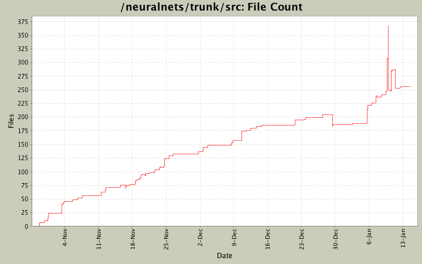
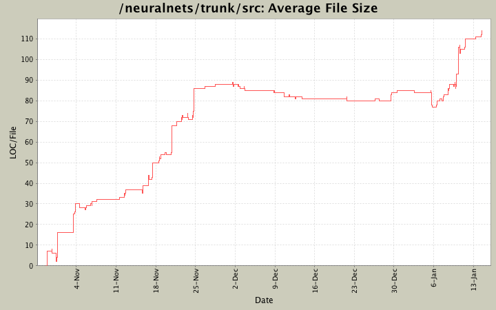

File Sizes and File Counts
- Total Files:
- 259
- Average File Size:
- 92.6 lines
- Average Revisions Per File:
- 5.9


File Types
| Type |
Files |
LOC |
LOC per file |
| Totals |
259 (100.0%) |
23995 (100.0%) |
92.6 |
| *.java |
259 (100.0%) |
23995 (100.0%) |
92.6 |
Largest Files
| File |
Lines of Code |
 uk/ac/ic/doc/neuralnets/expressions/ast/ExpressionASTLexer.java uk/ac/ic/doc/neuralnets/expressions/ast/ExpressionASTLexer.java |
949 |
| uk/ac/ic/doc/neuralnets/expressions/CalculationLexer.java |
916 |
| uk/ac/ic/doc/neuralnets/expressions/ast/ExpressionASTParser.java |
856 |
| uk/ac/ic/doc/neuralnets/expressions/CalculationParser.java |
741 |
| uk/ac/ic/doc/neuralnets/graph/neural/manipulation/InteractionUtils.java |
549 |
| uk/ac/ic/doc/neuralnets/gui/GUIManager.java |
542 |
| uk/ac/ic/doc/neuralnets/gui/modifier/AddNodesConfig.java |
459 |
| uk/ac/ic/doc/neuralnets/persistence/xml/XMLSave.java |
445 |
| uk/ac/ic/doc/neuralnets/gui/RunPanel.java |
444 |
| uk/ac/ic/doc/neuralnets/gui/modifier/ConnectNetworksModifier.java |
309 |
| uk/ac/ic/doc/neuralnets/gui/graph/ionodes/PunchingInputNode.java |
272 |
| uk/ac/ic/doc/neuralnets/gui/modifier/LayeredNetworkModifier.java |
257 |
| uk/ac/ic/doc/neuralnets/persistence/tns/ObjectIOEventHandler.java |
246 |
| uk/ac/ic/doc/neuralnets/gui/listeners/NeuroneDesigner.java |
242 |
| uk/ac/ic/doc/neuralnets/graph/neural/train/StepwiseTrainer.java |
233 |
| uk/ac/ic/doc/neuralnets/coreui/InterfaceManager.java |
230 |
| uk/ac/ic/doc/neuralnets/gui/commands/RemoveNodes.java |
223 |
| uk/ac/ic/doc/neuralnets/events/EventManager.java |
222 |
| uk/ac/ic/doc/neuralnets/graph/neural/SpikingNeurone.java |
211 |
| uk/ac/ic/doc/neuralnets/gui/GUILayout.java |
208 |
Files With Most Revisions
| File |
Revisions |
 uk/ac/ic/doc/neuralnets/gui/graph/GUIManager.java uk/ac/ic/doc/neuralnets/gui/graph/GUIManager.java |
44 |
| uk/ac/ic/doc/neuralnets/gui/modifier/AddNodesConfig.java |
39 |
| uk/ac/ic/doc/neuralnets/graph/neural/SpikingNeurone.java |
37 |
| uk/ac/ic/doc/neuralnets/graph/neural/Neurone.java |
34 |
| uk/ac/ic/doc/neuralnets/tests/graph/neural/SpikingNetworkTest.java |
29 |
| uk/ac/ic/doc/neuralnets/gui/GUIMain.java |
28 |
| uk/ac/ic/doc/neuralnets/gui/GUIMenu.java |
26 |
| uk/ac/ic/doc/neuralnets/gui/GUISideBar.java |
26 |
| uk/ac/ic/doc/neuralnets/gui/GUIToolbar.java |
24 |
| uk/ac/ic/doc/neuralnets/graph/Graph.java |
22 |
| uk/ac/ic/doc/neuralnets/persistence/xml/XMLSave.java |
20 |
| uk/ac/ic/doc/neuralnets/gui/modifier/LayeredNetworkModifier.java |
19 |
| uk/ac/ic/doc/neuralnets/gui/graph/InteractionUtils.java |
19 |
| uk/ac/ic/doc/neuralnets/gui/View.java |
19 |
| uk/ac/ic/doc/neuralnets/graph/io/InputNode.java |
17 |
| uk/ac/ic/doc/neuralnets/graph/neural/Synapse.java |
17 |
| uk/ac/ic/doc/neuralnets/gui/GUIMock.java |
16 |
| uk/ac/ic/doc/neuralnets/gui/graph/GUINode.java |
16 |
| uk/ac/ic/doc/neuralnets/tests/train/TestSTDPTrainer.java |
16 |
| uk/ac/ic/doc/neuralnets/graph/neural/NeuralNetwork.java |
16 |